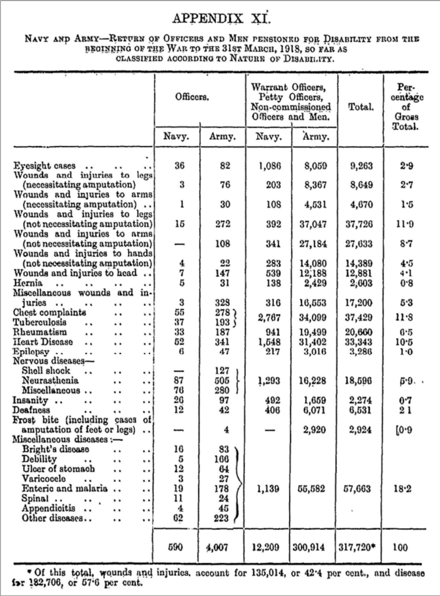
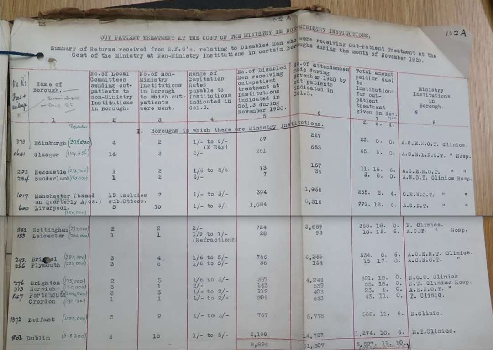
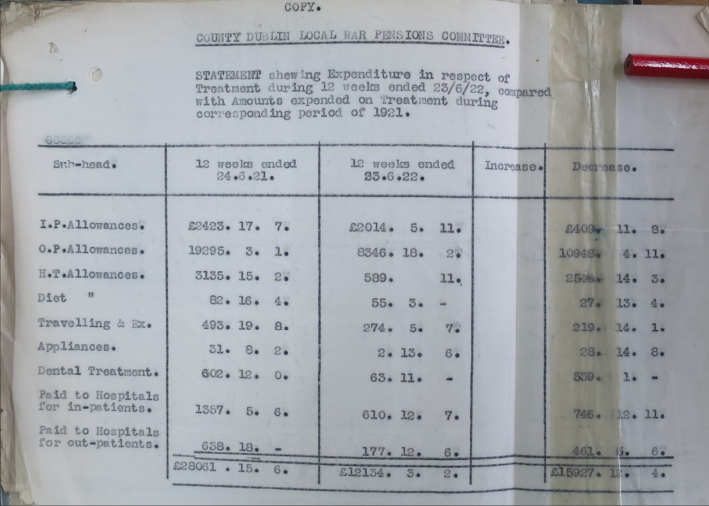
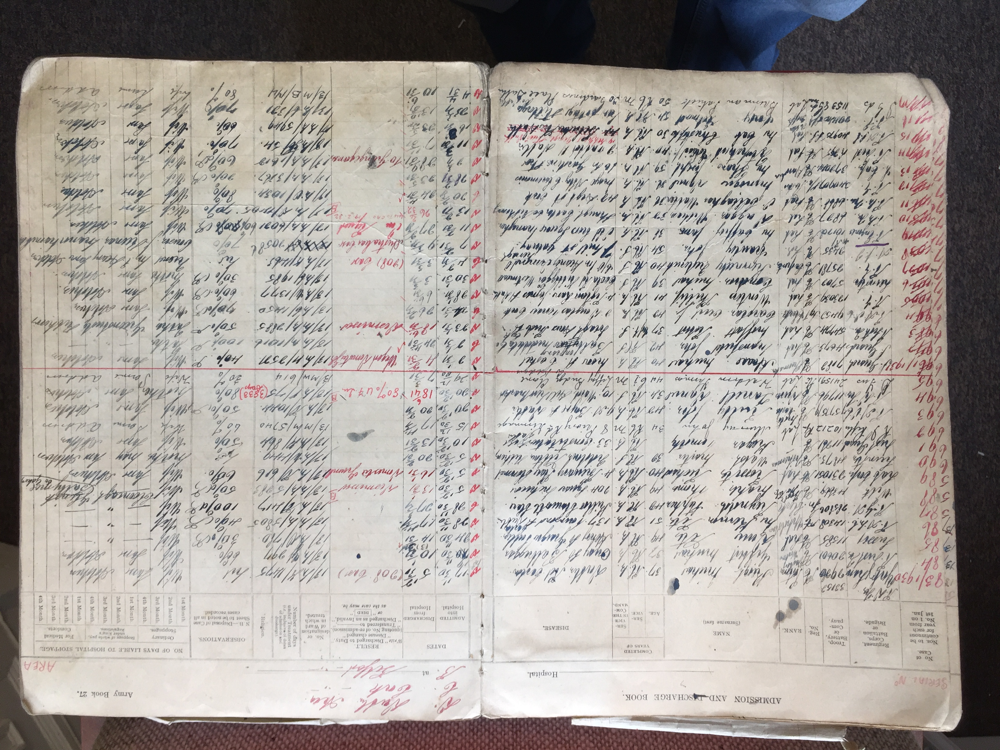

A "Lost Generation"
It is beyond contestation that certain groups suffered
disproportionately higher casualties than others, but this is
always true in war. British and Empire fatalities are estimated to
have been almost 900,000 out of approximately eight million people
who served in the military. At a personal level many dealt with
the grief of losing a loved one by cherishing their memory
throughout long periods of mourning or in a more tangible way such
as personal keepsakes. The emotions felt by those who chose this
path were quite often private and very personal. But many within
society and among the relatives of the unprecedented numbers of
missing needed something more. They found a focus for their grief
and loss in the more formal commemorative process that developed
in the years following the war and that commemorative process
seemed to dominate the public perception of the war.
During the decade of commemoration there has been an increased
interest in the many Irish men and women who served in the First
World War. There is an increasing amount of literature on the
Irish involvement in the military aspects of this conflict. There
is a limited amount of literature available about the individuals
who called the newly independent Irish Free State, home. Many
accounts detail the number of dead suffered on all sides and are
often illustrate this with a photograph of rows of headstones, or
in the case of a documentary, a panning shot across one of the
many graveyards scattered across the landscape of northern Europe.
Whatever the final number of dead may have been there was an even
greater number of soldiers who were injured or acquired a
debilitating illness.
The total number of sick and wounded has been re-assessed over
time. It is estimated that 2.3 million British soldiers were
treated for wounds, of which 7% later died and 8% were invalided
out of the service. Many others returned to full or limited
military service depending on the severity of the wounds suffered,
sometimes to be wounded a second or more times. These groups,
their dependants and those who later received war pensions in
respect of injuries or illness seem to have received less
publicity than smaller more newsworthy groups. If the war dead
were the "Lost Generation" of the early twentieth century, this
origin of this work was the idea that the wounded and sick of the
war, especially those who were disfigured or disabled could well
be considered a "Forgotten Generation".
The Data
A good deal of the available literature of those who served in the
Great War examines the psychological damage experienced by
veterans, a phenomenon then known as Shellshock or Neurasthenia,
and now more commonly referred to as Post Traumatic Stress
Disorder (PTSD). The research from which this dataset is taken is
different in that it deals more specifically with those who
suffered from what mainly physical disabilities, although this
does not mean that many veterans suffered from combinations of
both physical and mental trauma. This is a feature that will
become apparent as the data is analysed.
The research from which this dataset is taken is different in that
it deals more specifically with those who suffered from what can
be described as mainly physical disabilities. In the compilation
of official figures for disability pensions awarded by the
Ministry of Pensions, psychological conditions of all types were
categorised as diseases which meant that they were accounted for
in the non-combatant category. An analysis of the annual reports
published by the British Ministry of Pensions from 1918 to 1939
show that even at its greatest level, an average of just 9% of the
disability pensions awarded were for a psychological disorder
directly attributable to the war service of an individual. The
logical conclusion from these figures is that the overwhelming
number of pensions awarded were for physical injuries or diseases.
This facet of the story of disabled veterans of the Great War has
not been considered in as great an amount of detail as has the
story of the victims of Shellshock.
Even for example, if the statistics from the first Ministry Report
are adjusted to categorise psychological injuries as wounds, the
number of disease related disability pensions still exceed those
awarded for wounds or injuries in the proportion of 51% to 49%.

Extract from the First Annual Report of the Minister of Pensions
published in 1919.
The Nature of the Medical Care
The British government, through its Ministry of Pensions, put in
place a three level system of care for disabled veterans in the
Irish Free State. The first level of care was provided by medical
general practitioners (GPs) who provided treatment as needed to
any veteran who was in receipt of a disability pension. The GPs
were paid for their services by the London based Ministry of
Pensions. In the early years of the Irish Free State there were
approximately 27,000 men availing of this service. British
Treasury estimates were that the cost for this was near £2.600 per
annum.
The second arm of the triumvirate of medical services available to
disabled veterans of the Great War in Ireland were outpatient
clinics. A clinic offered specialised treatment for more serious
or persistent wounds or illnesses. They could be located in either
civilian or Ministry of Pensions run hospitals. They came to be
regarded as a more efficient and cost-effective way of providing
care for veterans. During the war civilian hospitals had provided
invaluable aftercare for many sick and wounded personnel leaving
Ministry of Pensions and military medical staff free for more
immediate primary care of patients.
After hostilities ended there were concerns that disabled
servicemen were not receiving the best possible care in civilian
run clinics albeit through no fault of the hospital concerned. For
instance, in Dublin city at that time, there were eighteen
civilian hospital providing various outpatient facilities for
disabled veterans and as an example of the numbers involved, in
November 1920 alone these treated 2,199 ex-servicemen over 14,727
separate visits.

PIN15/136 Ministry of Pensions Clinics, NAUK. Extract from the
reports from Regional Finance Officers, dated 19 March 1921, of
the numbers of non-Ministry medical institutions in use during
November 1920.
Eventually these clinics were reduced to just two Ministry of
Pensions run establishments based in Dublin and Cork, a factor
that resulted in a significant saving in the cost of continuing
medical care for veterans in the Free State. This is illustrated
in the table below extracted from Ministry of Pensions files.

PIN15/136 Ministry of Pensions Clinics, NAUK. Letter from
Ministry of Pensions Ireland (South) to Ministry of Pensions,
London dated 28 June 1922 showing the savings made by using
Ministry clinics rather than civilian.
The Hospital Patient Registers
In 2017, Eoin Kinsella published a history of the Leopardstown
Park Hospital as part of the centenary celebrations of that
establishment Which is located adjacent to the Leopardstown
Racecourse. It is currently a HSE facility that specialises in the
care of geriatric patients. In addition, it also provides for the
care of elderly pensioners who had been members of the British
Armed Forces. This is a legacy from when the hospital was one of
two British government hospitals in south county Dublin that had
been established to care for the sick and wounded of the First
World War.
The other hospital was the Blackrock Special Orthopaedic Hospital
that was situated on Carysfort Avenue, a relatively short distance
from Leopardstown. During his research Kinsella discovered seven
patient registers of First World War veterans from the two
hospitals ranging from the 1920s to the mid-1940s. Except for
Admission and Discharge Books five to seven, they are not
chronologically contiguous and as such they can be classified into
four distinct groups.
Book 1: Blackrock Admittance and Discharge Book April 1920 -
August 1926.
This book contains the earliest set of records for ex-officer
patients in the Blackrock hospital for this period that has been
found. The 286 entries in this volume also contain details of six
females who served in various branches of the nursing services who
were acquired a debilitating injury or disease as a result of
their service. As was the case then, as it is still now, the
medical treatment of officers and nurses was strictly segregated
from that of enlisted personnel.
Book 4: Colonial Chelsea Pensioners Admission and Discharge Book
May 1920 to June 1945.
Peculiarly, this book does not record actual Chelsea Pensioners,
so well known for their archaic red uniforms and tricorn hats.
Rather this book is a record of Irishmen who were disabled in the
armed forces of Australia, Canada, South Africa, and the United
States. Having chosen to return to Ireland to live, their medical
care was undertaken in Ministry of Pension facilities under
reciprocal arrangements with those countries for the treatment of
British and Irish disabled veterans who chose to live in those
parts of the Empire.
Books 5-7:
Leopardstown Park Admission and Discharge Book Aug 1930 to Oct
1936.
Leopardstown Park Admission and Discharge Book Oct 1936 to May
1942.
Leopardstown Park Admission and Discharge Book May 1942 to July
1945.
These three books form the largest record of its type known to
exist in the British Isles. All told, they contain a total of
3,050 entries, some of which chronicle individuals who were
admitted on several occasions including an ex-Private of the Royal
Army Service Corps (RASC) who was a patient no less than nineteen
times between July 1928 and October 1942.

Sample page taken from one of the record books.